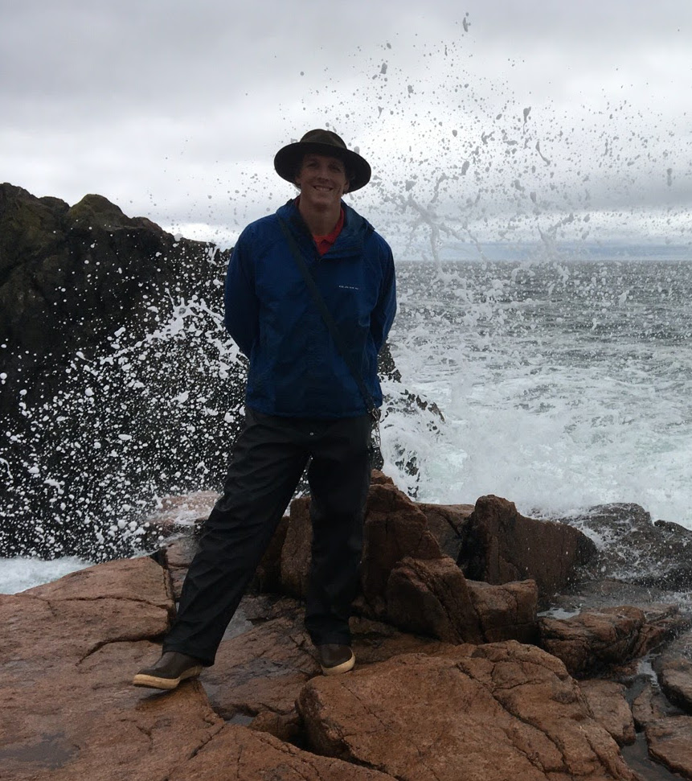
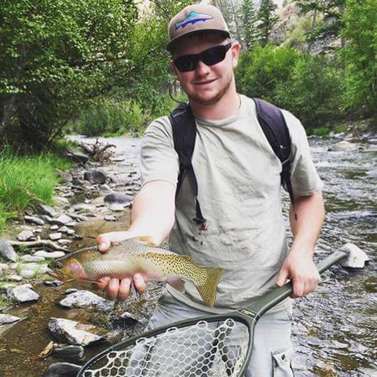
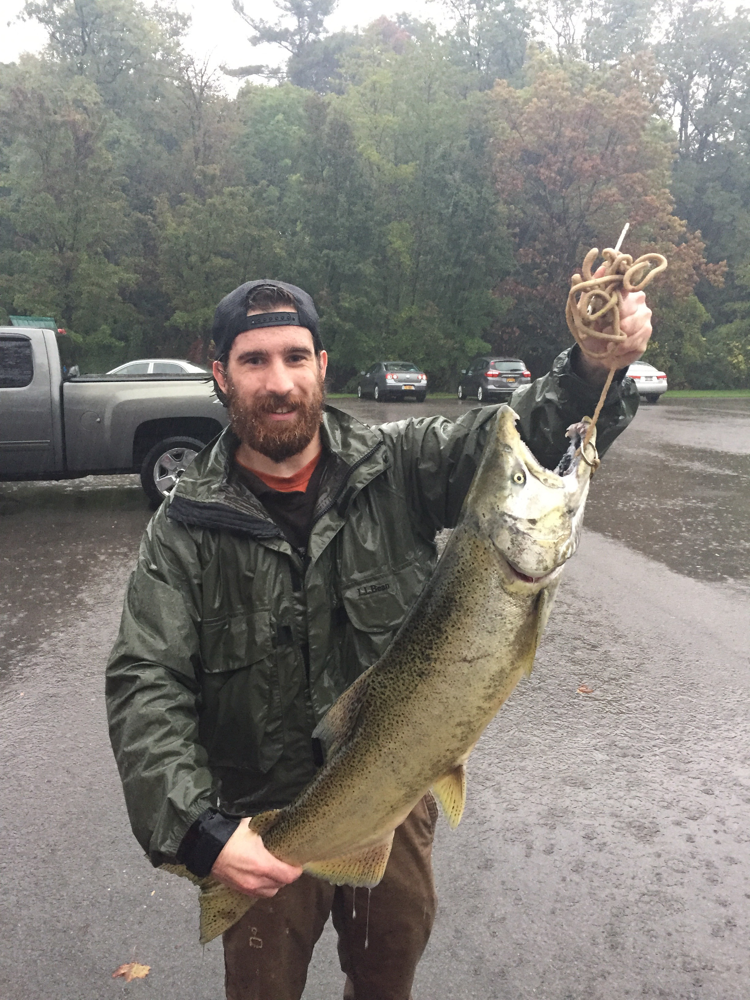
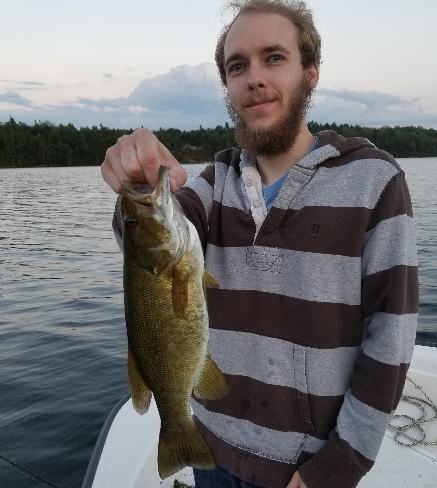
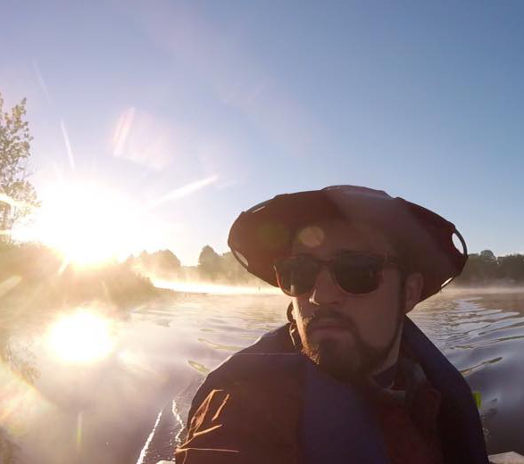
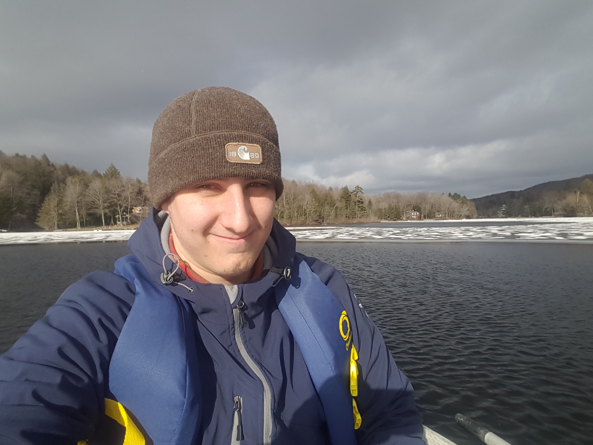

Current graduate students

David Andrews
Program: MS Lake Management
Project description: State of the lake and comprehensive lake management plan for Butterfield Lake, NY.

Samantha Carey
Program: MS Lake Management
Project description: State of the lake and comprehensive management plan for Forest and Allure lakes in NY.

Joseph (Ben) Casscles
Program: MS Lake Management, Professional Science Master's
Project description: My research interests include aquatic plant communities, adaptive management strategies, and applied fisheries management.

Stradder Caves
Program: MS Lake Management
Project description: State of the lake and comprehensive lake management plan for Crooked, Song, and Tully lakes in NY

Hayley Dower
Program: MS Biology
Project description: I am currently studying population dynamics and behavior of spawning walleye in Otsego Lake, NY. I am attempting to characterize the timing and duration of spawning, and I am using mark and recapture of tagged walleye to estimate growth, survival, and abundance.

Ryan Elliott
Program: MS Lake Management
Project description: My thesis research is focused on Lake of the Woods located in northern New York State. The Lake of the Woods Association and Indian River Lakes Conservancy have enlisted my help to investigate the current state of Lake of the Woods and to write a management plan that will help guide future management strategies. Current concerns among stakeholders on Lake of the Woods include the introduction of invasive species, harmful algal blooms, and the growth of invasive Eurasian watermilfoil, which is already well established in the lake.

Justin Hulbert
Program: MS Biology
Project description: I am investigating drivers of patterns in regional and state-wide growth and population size structure of walleye and yellow perch, popular sport fish in North America. This work is being conducted in collaboration with the New York State Department of Environmental Conservation (NYSDEC), and includes a variety of stakeholders.
Contact: hulbjr82@oneonta.edu

Joey O’Reilly
Program: MS Lake Management
Project description: My thesis work is focused on the Cassadaga Lakes system in Chautauqua County, New York. A science based state of the lake report and comprehensive management plan is being developed for the Cassadaga Lakes Association. Additionally, I am working to determine whether the different basins in Cassadaga Lakes differ from each other with respect to important lake parameters such as dissolved oxygen, temperature profiles, etc., to inform future sampling.

David Pfuhler
Program: MS Lake Management
Project description: State of the lake and comprehensive lake management plan for Crumhorn Lake, NY.

George Smith
Program: MS Lake Management
Project description: My thesis work is concentrated on the construction of a state of a lake report and a comprehensive management plan for Big Bowman Pond, which is a small 30 acre lake located within Rensselaer County, NY. I work with the local lake association and home owners around the lake to establish their management goals. The primary management issue on the lake is excessive vegetation (bladderworts) that restricts access to the lake for some. Overall, the goal of this study will provide high-quality information on the lake and determine the best method to solve the issue of vegetation.

Alexa Tumbarello
Program: MS Lake Management
Project description: Paradox Lake is a dual-basin lake in Essex County, NY. The biggest concerns among stakeholders include invasive macrophytes, water clarity, and long-term sustainability. For my thesis, I am developing a state of the lake report and comprehensive management plan for the Paradox Lake Association that addresses stakeholder-identified issues and guidance for sustainable management.
Former students
Ed Kwietniewski
Program: MS Lake Management (2017)
Current: Aqua Doc

Christian Jenne
Program: MS Lake Management (2017)
Project description: Education program, SUNY Oneonta

Alejandro (AJ) Reyes
Program: MS Lake Management (2016)
Current: Aquatic ecologist, Northeas Aquatic Research
Copyright © 2018 Dan Stich. All rights reserved.